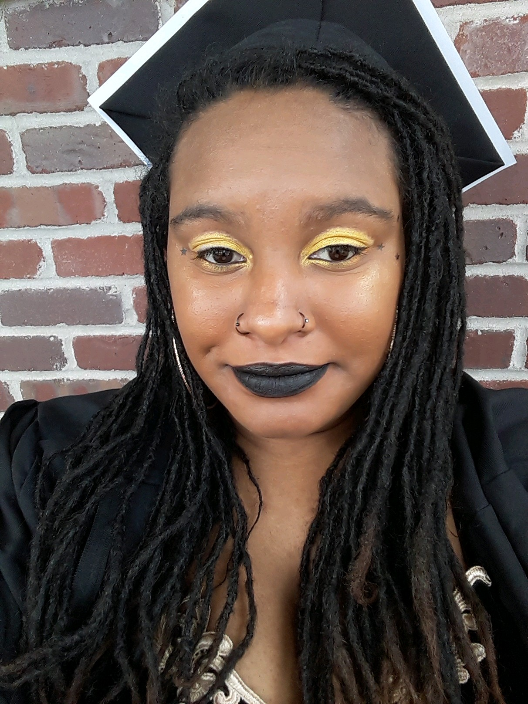

Welcome to My Life
Mi Familia!
This is my father. He's a teacher at George Washington High School, the school I used to attend. He was born and raised in Denver and graduated from University of Northern Colorado. After orginally working as an Electrical Engineer, he later got a degree in Elementary Education He enjoys playing Madden and is currently trying to learn how to program.
This is my mother. She's also a teacher; she teaches at Florida Pitt Waller. She was born in Cleveland, but moved around a lot because my grandfather was in the Air Force. After graduating from Metropolitan State University of Denver (MSU Denver) with a degree in Criminal Justice helped former inmates readjust to everyday life. She eventually got her teaching license, and the rest is history.
This is my sister. She recently graduated from MSU Denver with a degree in Elementary Education, and an endorsement in Culturally Linguistically Diverse Learning. Starting Fall 2020, she will be working as a 6th grade English teacher at Hamilton Middle School. She enjoys finding new ways to do her make-up and and scrolling through social media.
Click here see the favorite quotes from my family: